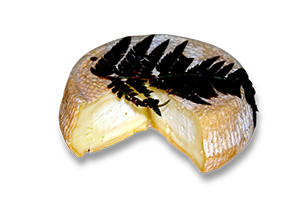
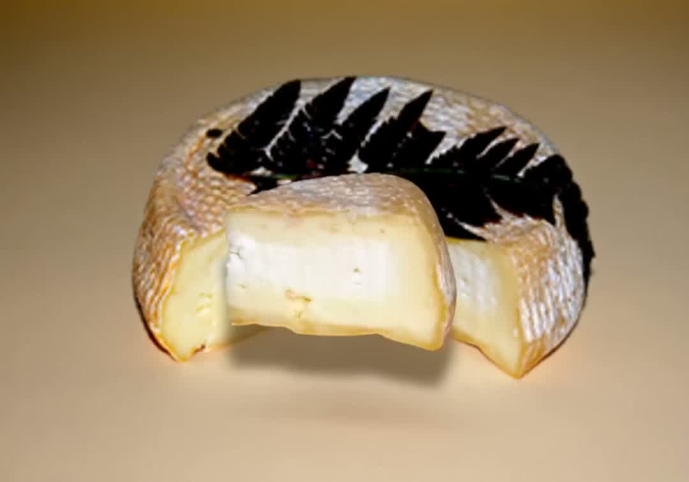
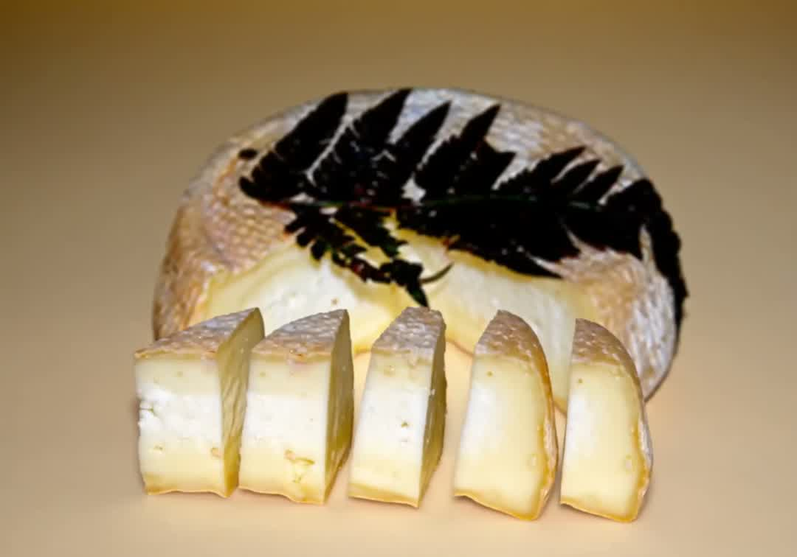

Tomme à la fougère
Notre signature : croûte naturelle, fougère du maquis, cœur souple et lacté.
Pièce ± 1,2 kgBrebis corse, lait cru, affiné sous la fougère du maquis.
Des brebis corses qui pâturent en liberté. Un lait cru entier, ramassé et travaillé le jour même.
La fougère du maquis posée sur la croûte signe chaque tomme et parfume l'affinage — la signature de la maison.
Une pâte souple qui s'ouvre en tranches généreuses. Avec un peu de confiture de figue, c'est la Corse entière.
Produits d'exemple — la liste réelle, les poids et les prix seront ceux du producteur.

Notre signature : croûte naturelle, fougère du maquis, cœur souple et lacté.
Pièce ± 1,2 kg
Six mois d'affinage pour une pâte plus dense et des arômes puissants.
Au quartier ou entière
Frais, doux, incontournable — le fromage corse par excellence, en saison.
Saison — hiver & printempsBoutique vitrine — commandes et renseignements en direct. Réponse rapide, envoi soigné depuis la Corse.
Nous contacter